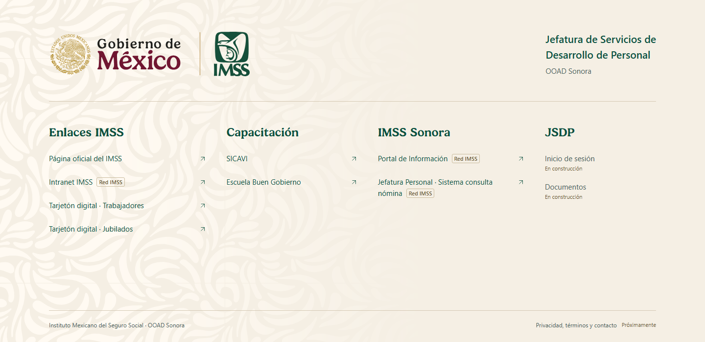
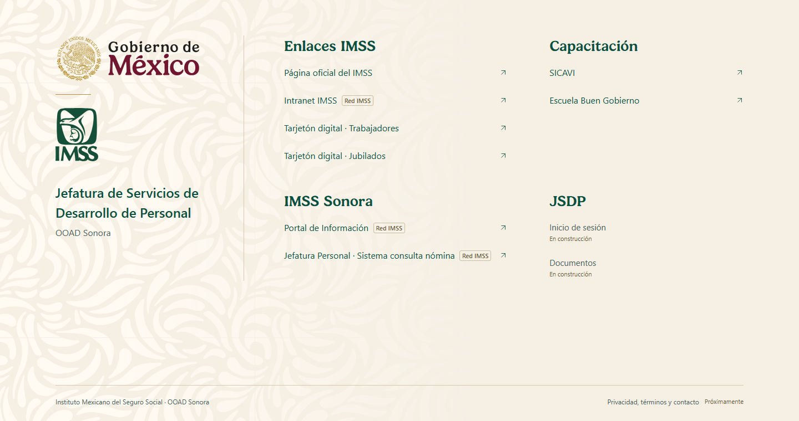
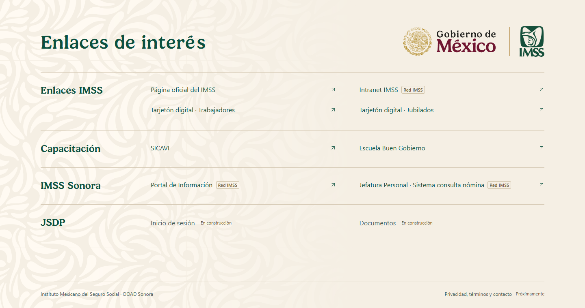
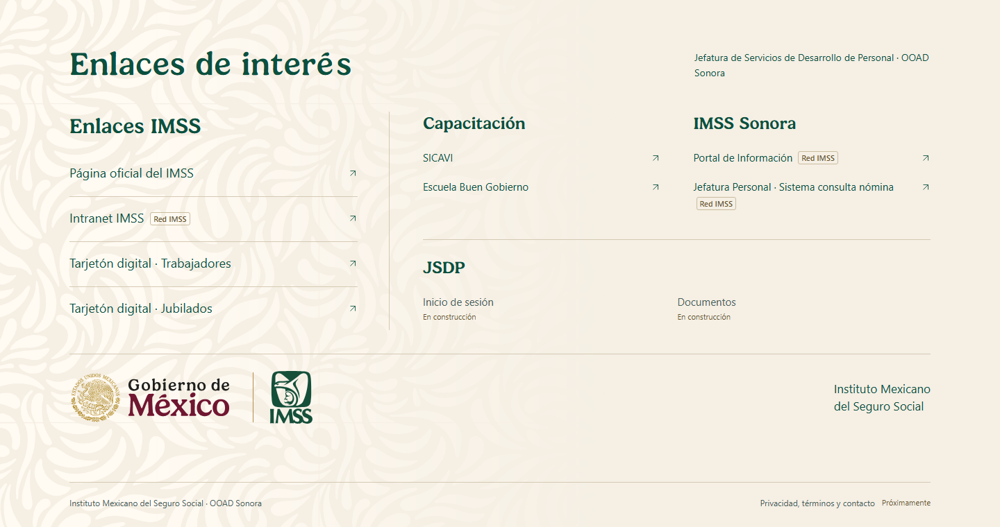
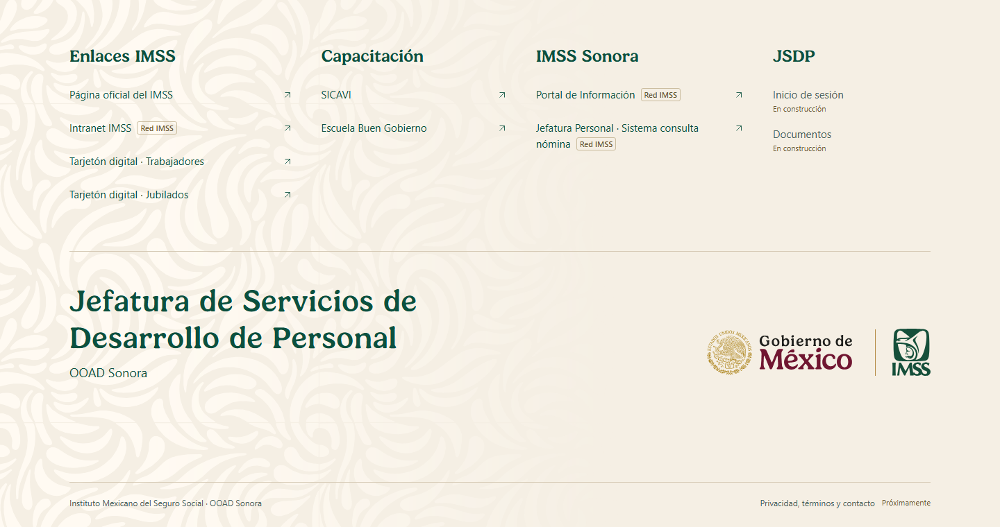

Cinco propuestas para el footer
Más espacio para los enlaces de IMSS, Capacitación, IMSS Sonora y JSDP. Las cinco propuestas conservan el fondo crema, el patrón existente y los SVG originales del Gobierno de México y del IMSS.
Recomendación: B · Firma lateral. Separa la identidad institucional del directorio y ofrece espacio para ampliar los grupos de enlaces.
A · Directorio institucional
Logotipos en una cabecera amplia y cuatro columnas de enlaces. Una organización familiar, clara y equilibrada.



B · Firma lateral
Identidad institucional a la izquierda y directorio en dos filas a la derecha. Mayor separación entre marca y navegación.



C · Índice editorial
Categorías en franjas horizontales y enlaces distribuidos en cada fila. Lectura ordenada y categorías fáciles de localizar.



D · Accesos prioritarios
Los cuatro enlaces IMSS ocupan la zona principal. Capacitación, Sonora y JSDP se agrupan a su derecha.



E · Cierre tipográfico
El directorio aparece primero y una firma institucional de gran escala cierra la página junto a los logotipos.
